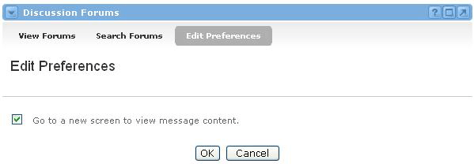
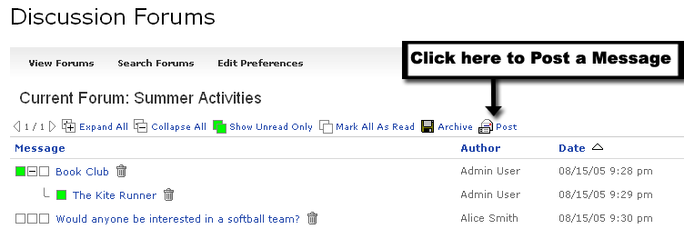
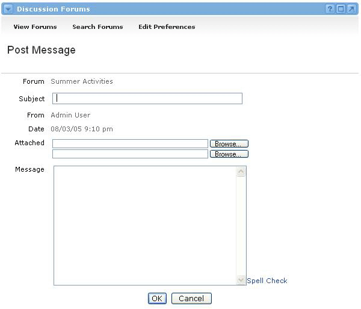
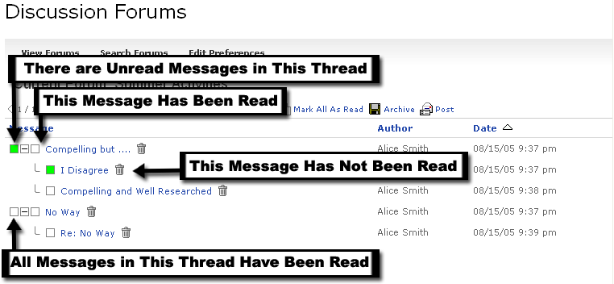
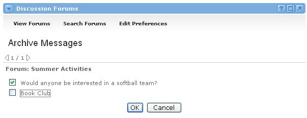
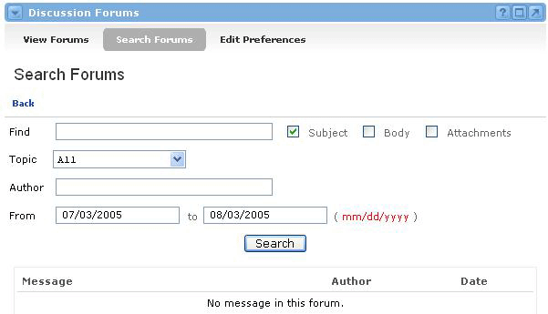
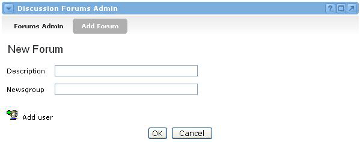
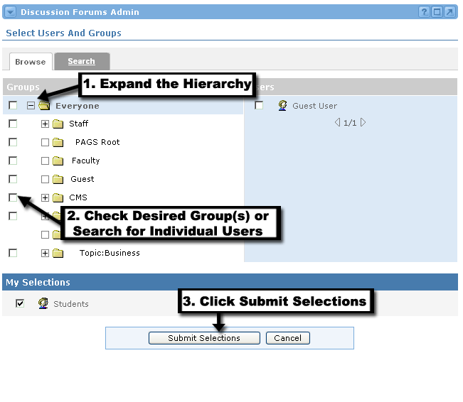

Discussion Forums Channel
Looking for more help options? Click Here
The Discussion Forums channel is a forum for the users associated within the portal community. A discussion board (known also by various other names such as discussion group, discussion forum, message board, and online forum) is a general term for any online "bulletin board," where you can leave and expect to see responses to messages you have posted.
There are two levels to the channel: Forums and Messages. All messages must be posted within a Forum. Therefore, Forums serve as a means to group messages by a certain subject or user group. A Forum audience can contain the entire portal community user list, or it can be limited to any combination of individual users or groups.
The Discussion Forums channel allows users to view, post, and delete messages, attach files and links to messages, and archive an entire Forum (if permissions allow). Users can also search Forums for specific text in the subject, body, or attachments of any message. Finally, users can select which Forums they would like to view versus which ones they want to ignore. This process is called subscription.
Subscribing to ForumsThe first step in using the Forums channel is subscribing to a forum. When you subscribe to a Forum, you are indicating that you would like to read the messages within this Forum, and possibly post some messages of your own. When you subscribe to a Forum, it will show up in the channel when you click the View Subscribed Forums link within the channel.
To subscribe to Forums, follow these steps:
- First, you will need to find any available Forums. Locate the Find search box on the right hand side of the channel. Enter a desired forum name into the text into the box or leave the box blank to see a list of all forums available to you.
- Click the Find button.
- You will now see a list of forums that match your search criteria.
- To subscribe to any Forum, click the checkbox in the Subscribe column.
- To unsubscribe from a Forum, uncheck the box in the Subscribe column.
- Forums will be immediately subscribed or unsubscribed. There is no need of an OK button at this point.

Forum Preferences
To change your viewing preferences in the Discussion Forum channel, follow these steps:
- Locate the Discussion Forums channel and click the Edit Preferences link at the top of the channel.
- You will now see the Preferences screen.
- When viewing message content, if you would like to Go to a new screen to view message content, check the box next to this choice.
- Click the OK button when your preferences are set.

Posting a Message
To post a message to a specific forum, follow these steps:
- Choose the Forum where the message should appear by clicking on it.
- Within the channel a number of options appear. Click the Post button, signified by a letter and envelope icon.
- The message form now appears. Type a Subject for the message.
- The From field automatically defaults to the user who is currently logged in.
- If there are attachments to include, enter the path to the files or click the Browse button to navigate to the appropriate files.
- Type the message text in the Message field. If you type a URL into your message body, it will automatically link users to the website in a new window.
- To spell check message text, click the Spell Check link.
- When the message is finished, click the OK button at the bottom of the form.
- The message has now been posted.

|
|
You can take a short cut in Step 1 by simply clicking on the envelope icon for Forum's in the default list view. However, this will not allow you to post a reply to any specific message. Your post will appear at the root level of the Forum. |

Viewing and Replying to a Message
Viewing a message is easy. Follow these steps:
- Note that the columns to the right of the forum Name display how many unread (New) and total messages exist in each topic.
- Click on any Forum to access its messages.
- Messages are grouped according to subject. Any replies to the first message appear below it.
- A box appears to the left of each message. If the box is green, this message has not yet been read. If the box is white, the currently logged-in user has already viewed the message.
- If a message has replies associated with it, there will be a plus or minus button next to the parent message. Click this button to expand or collapse the message tree.
- To view a message, click on the message.
To delete a message (if appropriate permissions are available), click the trash can icon to the right of the message.
|
|
Be careful when deleting messages. When you delete a message, all of its replies (if any) will also be deleted. |

Archiving Messages
Occasionally, the Forums channel may become cluttered with out-of-date and/or inappropriate messages. In this case, archiving is the best option. The Archive feature will temporarily remove an entire thread (including the first message and all subsequent replies) from the channel. This is not a permanent deletion; archived messages can be recovered. To archive a thread, follow these steps:
- From the main Forum view, click the Archive icon.
- Check the box next to the message thread(s) that should be archived.
- Click the OK button.
- The thread(s) are no longer visible to any users on the main Forum view.
To "unarchive" a message thread, simply follow the same steps above and uncheck any threads that need to be recovered. If a thread is checked, it is archived. If it is unchecked, it is visible.

Searching the Forums
The Forums Channel may eventually become highly populated with messages. In this event, the Search feature will come in handy. This feature allows searches on text within a message, within the subject, or on attachment files. Message searches can be refined to locate posts from within a specific topic, by a specific author, or by posting dates. To conduct a search, follow these steps:
- Click Search Forums option.
- Enter the text to find in the Find field of the Search view.
- Check the boxes where the search should take place: Subject, Body, and/or Attachments.
- Decide which Forum(s) (also called "Topics") to include in the search. Choose either All Forums, or pick a specific one.
- If the message Author is known, enter that in the Author field to help refine the search.
- Enter dates in the From and To fields to search during a specific time period. Note that the required date format is mm/dd/yyyy.
- Click the Search button to begin the search.
- Results will appear beneath the search section. If you desire more or fewer results, refine your search accordingly and click the Search button again. Once you've found the message, click on its title to view the message contents.

Discussion Forums Admin Channel
The Discussion Forums Admin Channel makes it possible for an administrator to create forums for community discussion, or to delete forums that are no longer relevant. This channel also allows the administrator to restrict forum access to certain users or groups, as well as set user and group permissions (i.e. viewing, adding and deleting messages, etc.) for each forum. Creating a New Forum
To create a new forum, follow these steps:
- Locate the Discussion Forums Admin channel and click the Add Forum link.
- You should now see the New Forum screen.
- Choose a name for this forum by typing it in the Description field.
- For the Newsgroup field, it is best to enter a single word in lower-case. This field is used to create a newsgroup on the community's news server. Newsgroups usually use a format similar to "university.academus.forums.homework" where "homework" might be the name of your discussion forum. By only entering one word into the Newsgroup field, it helps conform to the general standard.
- If you click the OK button at this time, the forum will be created, but no one will be able to view it. This is because you haven't yet assigned users to this forum. So instead of clicking the OK button, simply click the Add user icon on the lower left side of the channel.

Adding Users to the Forum
You will now see the Select Users And Groups screen. To add users and groups to this forum, follow these steps:
- Use the Browse tab to select group(s) from the group hierarchy, click the + icon next to a group name to expand the group list.
- Place a checkmark next to each group for which the discussion forum will be enabled.
- To search for specific users, click the Search tab.
- Enter search criteria and click Search.
- Place a checkmark next to each user for whom the discussion forum will be enabled.
- Once all desired users and/or groups have been selected, click the Submit Selections button at the bottom of the channel.

Setting Permissions for the Forum
Now that you've added users and/or groups to the forum, you need to assign privileges to these users and groups before they will be able to access the forum messages. There are four different permission settings:
- Archive - This allows a user to archive the forum, which removes it from all users' view. It does not permanently delete the forum, though. Archived forums can always be "unarchived."
- View posting - This allows a user to view all the messages posted within the forum.
- Add posting - This allows a user to post new messages as well as reply to other users' messages.
- Delete posting - This allows a user to delete any messages that have been posted, regardless of who wrote them. A user will always have privileges to delete their own posts.
To grant permissions to users and groups for any of these settings, check the corresponding boxes on the matrix. To remove permissions from users and groups, uncheck the corresponding boxes on the matrix. When all changes have been made, click the OK button.

Editing and Deleting Forums
The Discussion Forums Admin channel allows a user to find any and all forums. To do so, follow these instructions:
- Locate the Discussion Forums Admin Channel.
- Enter text into the Find box at the top of the channel. Or, leave the box blank to see a list of all forums.
- Click Find.
- You will now see a list of forums that match your search string. From this view you can edit or delete forums.
To edit a forum:
- Click the forum names to edit details, add or remove users and groups, or to alter the permissions for any groups or users.
To delete a forum:
- Click on the Delete icon in the Remove column for the desired forum.
- You will be prompted to confirm the deletion of the selected forum. Click OK to proceed with the removal of the forum. Click Cancel to return to the forum list view.